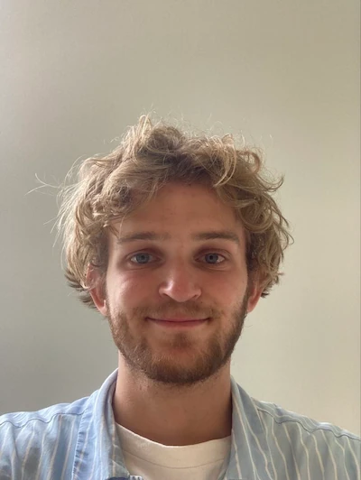

CV

Jacob Bosse Vestergaard
Alder:
23
Bosted:
Frederiksberg
Født:
Østerbro
Højde:
1.80cm
Øjenfarve
Blå
Udannelse
STX, Ørestad Gymnasium
10. Klasse, Sydøstsjællandsidrætsefterskole
Grunddudannelse, Kildegaard Privatskole
Erhverserfaring
Apoteksbud
Pædagogmedhjælper, Stadens Vænge
Pædagogmedhjælper, Børnehuset ved Søerne
Interesser
Design
Fotografering
Servive
Færdigheder
Html
CSS
Javascript
Om Mig
Mit navn er Jacob Bosse Vestergaard. Jeg er 23 år og bor på Frederiksberg, men er vokset op Østerbro. Jeg valgte at gå på KEA fordi jeg har en interesse for design i mange omfang.